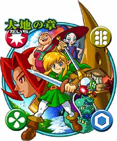
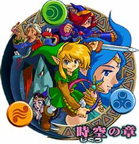
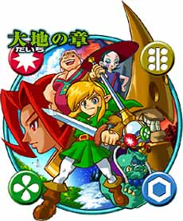
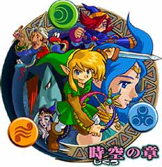
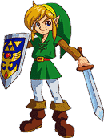

|  |  |
|  |  |
| 今月のＮ．Ｏ．Ｍは期待の新作『ゼルダの伝説 ふしぎの木の実』（ゲームボーイ）特集です。今回のゼルダは、『大地の章』『時空の章』の２本同時発売！ この２つは第１部、第２部という単純な分かれかたではなく、「リンクシステム」というユニークなシステムで、密接に関わりあっているんです。もちろん、１本でプレイしてもじゅうぶんに楽しめる内容ですが、２本プレイすればさらに楽しい！ お友達や兄弟で１本ずつ買って情報交換すれば、ゲームの世界をより深く味わうことができるんです。さて、新しいゼルダには、どんな冒険がつまっているのでしょうか。 |
|  |
|
||||||||||||||||||